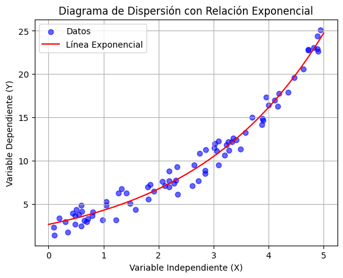
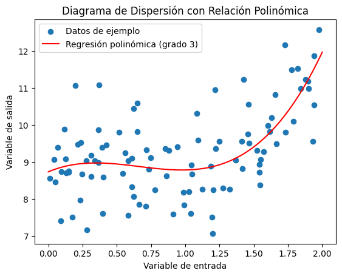

Problemas de regresión#
La regresión es un concepto fundamental en estadística y aprendizaje automático que se utiliza para modelar la relación entre variables. Un problema de regresión implica predecir un valor numérico basado en la relación entre una o más variables de entrada. Este tipo de problemas se contrasta con los problemas de clasificación, donde el objetivo es asignar una etiqueta a una instancia. En cambio, en la regresión, se busca estimar o predecir un valor continuo.
En un problema de regresión, se asume que existe una relación funcional entre las variables de entrada y la variable de salida. La tarea consiste en encontrar la mejor aproximación de esta relación. Los modelos de regresión pueden ser lineales o no lineales, dependiendo de la naturaleza de la relación subyacente. Los modelos lineales asumen una relación lineal entre las variables, mientras que los modelos no lineales permiten relaciones más complejas.
El objetivo principal en un problema de regresión es minimizar el error entre las predicciones del modelo y los valores reales de la variable de salida. Esto se logra ajustando los parámetros del modelo de manera que la diferencia entre las predicciones y los valores reales sea lo más pequeña posible. Las métricas comunes para evaluar la calidad de un modelo de regresión incluyen el error cuadrático medio (ECM) o el coeficiente de determinación (R²).
Los problemas de regresión tienen aplicaciones en diversas disciplinas, como economía, finanzas, ciencias sociales, ciencias naturales y muchas otras. Por ejemplo, en economía, se pueden utilizar modelos de regresión para predecir el crecimiento económico basándose en diferentes variables predictoras.
Regresión lineal#
La regresión lineal es una de las herramientas más fundamentales en el campo de la informática y la ciencia de datos. Permite a los profesionales de la informática modelar y predecir relaciones entre variables, lo que resulta esencial para la toma de decisiones informadas y la resolución de problemas en una amplia variedad de aplicaciones tecnológicas.
La regresión lineal es una técnica que busca establecer una relación lineal entre una variable que deseamos predecir (la variable dependiente) y una o más variables que utilizamos para realizar esa predicción (variables independientes o predictores). Puede aplicarse a escenarios tan diversos como la predicción de tiempos de ejecución de algoritmos, la recomendación de productos a usuarios o la gestión eficiente de recursos en servidores.
En el corazón de la regresión lineal se encuentra la idea de que podemos comprender y cuantificar cómo una o más variables influyen en otra variable de interés. Esta técnica es muy importante, ya que permite tomar decisiones basadas en datos, tales como optimizar algoritmos y sistemas además de construir aplicaciones más inteligentes y predictivas.
En términos simples, la regresión lineal se trata de encontrar la mejor línea recta que se ajuste a un conjunto de datos. Imagina que tienes un conjunto de puntos dispersos en un gráfico, donde en el eje horizontal tienes una variable (o características) y en el eje vertical tienes la variable que quieres predecir. La regresión lineal busca trazar una línea que minimice la distancia entre esta línea y todos los puntos, de manera que se pueda utilizar para hacer predicciones precisas.
Donde:
y es la variable que queremos predecir.
\(x_{1}, x_{2}, …, x_{p}\) son las características (variables) que utilizamos para hacer la predicción.
\(b_{0}\) es el término de intersección (el valor de y cuando todas las x son cero).
\(b_{1}, b_{2}, …, b_{p}\) son los coeficientes que representan cómo influyen las características en y.
\(ϵ\) es el término de error que tiene en cuenta la variabilidad no explicada por el modelo.
La regresión lineal puede ser simple, con una sola variable predictora, o múltiple, con múltiples variables predictoras. En informática, esto es especialmente útil, ya que puedes predecir resultados basados en múltiples factores, como el rendimiento de un algoritmo en función de diferentes métricas de entrada.
Relación esperada#
En el modelo de regresión lineal, uno de los aspectos cruciales es definir la relación esperada entre las variables independiente y dependientes. Esta relación es el núcleo del modelo y tiene implicaciones significativas en la interpretación y las predicciones que podemos hacer.
La relación esperada puede variar en naturaleza. En un escenario de regresión lineal simple, se supone una relación lineal, lo que significa que se espera que los cambios en la variable independiente se reflejen proporcionalmente en la variable dependiente. Esto se representa como una línea recta en un gráfico de dispersión.
Sin embargo, en situaciones del mundo real, la relación puede no ser perfectamente lineal. En tales casos, se pueden explorar modelos de regresión no lineales que se ajusten mejor a la relación subyacente, como la regresión polinómica o la regresión exponencial.


La suposición de linealidad es fundamental en la regresión lineal simple. Significa que, según la relación esperada, un cambio constante en la variable independiente debería tener un efecto constante en la variable dependiente. Esta simplicidad hace que el modelo sea fácil de interpretar y calcular.
Sin embargo, es importante destacar que, si la relación subyacente no es lineal, el modelo de regresión lineal simple podría no ser adecuado. Identificar la naturaleza correcta de la relación es esencial para garantizar que el modelo capture con precisión el comportamiento de los datos.
Por otro lado, la formulación de la relación esperada está estrechamente relacionada con los supuestos del modelo de regresión lineal. Estos supuestos incluyen la linealidad, la independencia de errores, la homocedasticidad6 y la normalidad de los errores. La violación de cualquiera de estos supuestos puede afectar la validez del modelo y las predicciones que genera.
Por lo tanto, antes de aplicar el modelo de regresión lineal, es esencial validar si la relación consta de una linealidad y considerar otras alternativas si la relación esperada no es lineal.
Para ilustrar la importancia de la relación esperada, consideremos un ejemplo: la relación entre el tiempo de estudio de un estudiante y su puntuación en un examen. En este caso, se espera que exista una relación positiva, lo que significa que, en general, a medida que un estudiante pasa más tiempo estudiando (variable independiente), obtendrá una puntuación más alta en el examen (variable dependiente).
Al formular la relación esperada de esta manera, estamos preparados para aplicar un modelo de regresión lineal simple que nos permita cuantificar y predecir el impacto del tiempo de estudio en las puntuaciones del examen.
Interpretación de Coeficientes#
En una regresión lineal, la interpretación de los coeficientes es esencial para comprender cómo la variable independiente influye en la variable dependiente. Vamos a explicar la interpretación de los coeficientes en un contexto de regresión lineal simple sin introducir la fórmula matemática.
Coeficiente de la Variable Independiente (\(β_{1}\)): Este coeficiente representa el cambio esperado en la variable dependiente (Y) por cada unidad de cambio en la variable independiente (X). En otras palabras, si \(β_{1}\) es igual a 2, significa que, en promedio, cada unidad adicional en X se asocia con un aumento de 2 unidades en Y (si \(β_{1}\) es positivo) o una disminución de 2 unidades en Y (si \(β_{1}\) es negativo).
Coeficiente de Intercepción (\(β_{0}\)): Este coeficiente representa el valor esperado de la variable dependiente (Y) cuando la variable independiente (X) es igual a cero. En muchos contextos, esta interpretación puede no tener un significado práctico, ya que a menudo no tiene sentido que X sea igual a cero en situaciones del mundo real.
Hay que tener en cuenta que la interpretación de \(β_{1}\) es fundamental. Por ejemplo, si estamos realizando una regresión lineal simple para predecir el rendimiento de un automóvil en millas por galón (Y) en función de la velocidad del automóvil en millas por hora (X), y \(β_{1}\) es igual a 2, podemos decir que, en promedio, por cada aumento de 1 milla por hora en la velocidad del automóvil, se espera un aumento de 2 millas por galón en el rendimiento del combustible. Del mismo modo, si \(β_{1}\) es igual a -2, significaría que, en promedio, por cada aumento de 1 milla por hora en la velocidad del automóvil, se espera una disminución de 2 millas por galón en el rendimiento del combustible.
Es esencial recordar que la interpretación de los coeficientes depende en gran medida del contexto del problema y de la elección de las variables. Además, las relaciones lineales simples capturan relaciones proporcionales en los datos. Si la relación no es lineal, la interpretación puede volverse más compleja.
Aplicación Práctica#
Una vez formulado correctamente el modelo, podemos proceder a la estimación de los coeficientes y realizar predicciones basadas en datos reales. La formulación del modelo sienta las bases para el análisis y la toma de decisiones informadas en diversas aplicaciones informáticas. Vamos a ver algunas aplicaciones de la regresión lineal simple:
En el mundo empresarial, la regresión lineal simple se utiliza para predecir las ventas de un producto o servicio en función de variables como el gasto en publicidad. Por ejemplo, si una empresa quiere entender cómo el gasto en publicidad afecta a las ventas de un producto, puede utilizar un modelo de regresión lineal simple. Esto permite tomar decisiones informadas sobre la inversión en publicidad.
En el **ámbito de la **, la regresión lineal simple se aplica para analizar el rendimiento de servidores. La variable independiente podría ser la carga de trabajo del servidor (por ejemplo, el número de solicitudes por minuto), y la variable dependiente podría ser el tiempo de respuesta del servidor. Esto ayuda a optimizar recursos y mejorar la eficiencia del servidor.
En el campo educativo, se utiliza la regresión lineal simple para comprender cómo las horas de estudio afectan al rendimiento académico de los estudiantes. Esto permite a los educadores y estudiantes tomar decisiones basadas en datos para mejorar los resultados.
En la investigación científica, la regresión lineal simple se emplea para analizar datos experimentales. Por ejemplo, en la física, se puede utilizar para relacionar la temperatura con la presión en un experimento. En la biología, se puede aplicar para estudiar la relación entre la dosis de un medicamento y su efecto en un organismo.
En la meteorología, la regresión lineal simple se usa para predecir valores climáticos basados en datos históricos. Por ejemplo, para pronosticar la temperatura máxima diaria en función de la fecha del año y datos anteriores.
En el sector inmobiliario, la regresión lineal simple se aplica para estimar el precio de una propiedad en función de características como el tamaño de la vivienda, la ubicación y el número de habitaciones. Esto ayuda a los compradores y vendedores a tomar decisiones informadas.
En el marketing en línea, se utiliza para el impacto de las campañas publicitarias en las tasas de clics o conversiones. Esto ayuda a las empresas a asignar sus recursos publicitarios de manera eficiente.
En la industria manufacturera, la regresión lineal simple se usa para controlar la calidad de los productos. Puede ayudar a identificar cómo las variables de proceso (como la temperatura o la velocidad) afectan la calidad del producto final.
Regresión lineal en Python#
La implementación de un modelo de regresión lineal en Python es una tarea esencial para el análisis de datos y la creación de modelos predictivos. Para llevar a cabo esta implementación, se utilizan bibliotecas como numpy, matplotlib, y scikit-learn, que facilitan el manejo de datos, la visualización y la construcción de modelos de regresión. En este apartado vamos a ver como implementar nuestros modelos y validarlos utilizando las distintas herramientas que tenemos.
Para ello, vamos a utilizar el DataSet visto anteriormente, donde la variable dependiente sería los costes del seguro médico, mientras que el resto de las variables serían independientes.
| Columna | Definición | Tipo de datos | Ejemplos | Número de nulos |
|---|---|---|---|---|
| No | Número de la columna | Número | 22, 35, 48 | 0 |
| Age | Edad del beneficiario | Número | 22.0, 33.0, 32.0 | 29 |
| Sex | Género del beneficiario | Texto | Male, female | 86 |
| Bmi | Índice de masa corporal | Número | 11, 20, 31 | 98 |
| Children | Hijos en el seguro | Número | 0.0, 1.0, 3.0 | 82 |
| Smoker | Fumador | Texto | Yes, no | 48 |
| Region | Zona del beneficiario | Texto | Southwest, southeast | 121 |
| Charges | Prima del seguro | Número | 16884.92, 1725.55 | 55 |